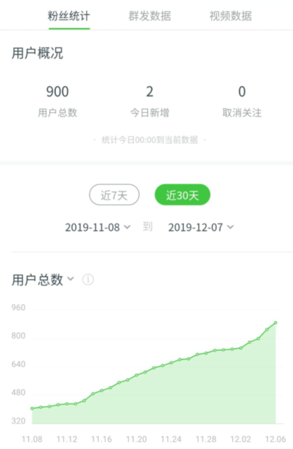
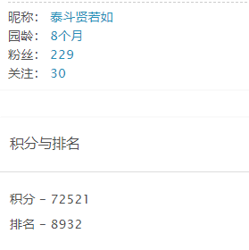
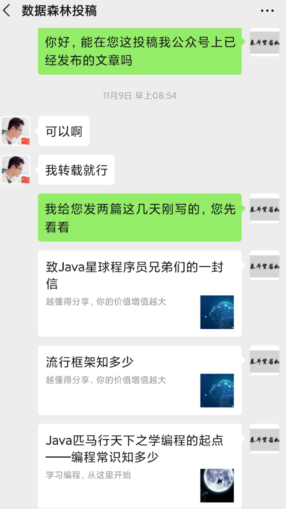
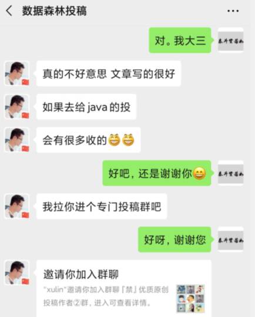
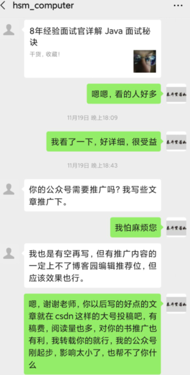
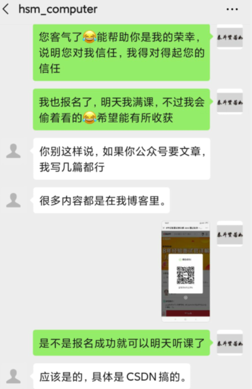
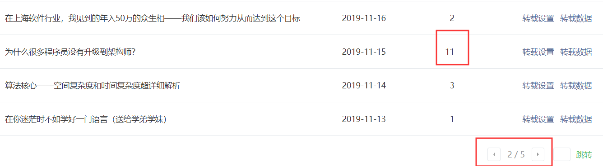
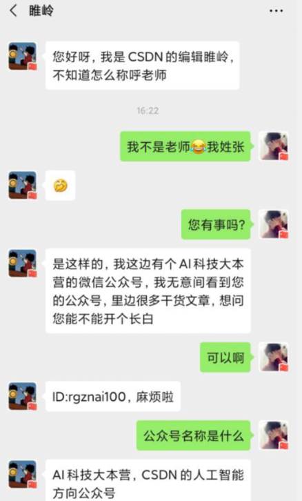
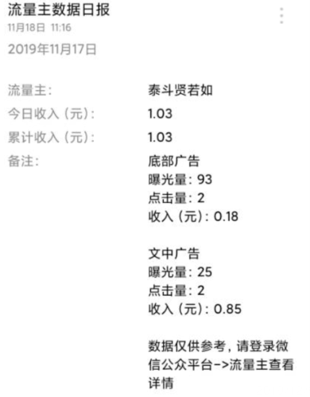
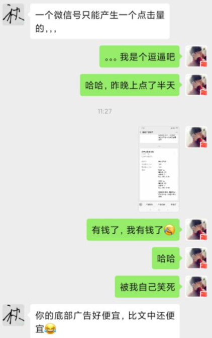

原文连接:https://www.cnblogs.com/zyx110/p/12021844.html
写公众号一个月关注量破900，聊聊我的感受
前言
写公众号一个多月了，于2019年12月7日零点关注量定格在900人。

最近有好多公众号号主好奇，在微信上问我是怎么做到的，他们说，他们有的做公众号几年多，有的几个月多不等，也就六七百人关注，我不知道是真是假，我也不知道我写一个月公众号关注量破九百是多是少，但我是个实诚人，也不藏私，既然你们这么多人问我了，那我有啥说啥，有知识大家一起分享，有钱大家一起赚，还是我在博客园和公众号上常说的那句话：“越懂得分享，你的价值增值越大”，这句话我在博客园写文章的时候就感触颇深，所以不要质疑这句话的真实性，不要把自己眼界的局限当成世界的局限。下面我来具体聊聊我是怎么做的吧！
公众号的背景
2019年九月中旬，我注册了【泰斗贤若如】公众号，当时注册的时候想的很简单，就想把我博客园上的文章搬到公众号上，这样自己在手机上看的时候比较方便，别人看着也方便。因为是第一次玩公众号，还感觉挺新鲜的，刚注册完后，兴致挺高，在我的博客园找了几篇文章后，重新排版，用的是微信公众平台自带的编辑器，还学别的公众号，在文末加上公众号二维码，然后找跟文章对应的图片，最后声明原创后发布，一套操作猛如虎。趁着这股兴致，我把我的公众号分享给了微信好友中的家人和朋友，还有学院的学弟学妹们，让他们关注我，由此，我收获了我的第一批粉丝，大概有八十多个吧，这些可都是真正的铁粉啊哈哈。后来我在公众号上进行文章分类，然后对应分类从我的博客园挑选文章，把文章重新排版后放到公众号上。由于我用的是微信公众平台自带的编辑器，排版很花时间，而且排版出来后发布的效果不尽人意，我不是很满意。几天后，兴致就没有那么高了，越来越淡，以至于到最后都不管了。
公众号复出
公众号被我冷了一个多月，快到十一月中旬的时候，我在博客园偶然看到了秋哥写的一篇《人生第一个十万》的文章， 被他的第一个十万所吸引，紧接着我关注了秋哥的公众号【苦逼的码农】，添加了秋哥好友。我跟秋哥很投缘，在我俩互相聊了互相的故事后，便很熟络了，后面再聊的时候就有种惺惺相惜的感觉，他帮了我很多，学习上给了我很多建议，公众号上也是帮了我很多，我后面再说。我视他为学习榜样、生活朋友。跟他接触了几天后我一激动就拿起键盘，敲了一篇四千多字的文章《在校大四学长赚人生第一个十万——越努力，越幸运》发布在博客园，现在有两千多的阅读量，文章中心思想就俩字——赚钱。文章里面介绍了一些我在大学阶段赚小钱的经历，话说大学时代谁不缺钱，双十一快来了，大家都懂的，我购物车里还放着两个陶笛呢，双十一买了之后，又得过吃土的日子。说到陶笛，我觉得程序员的世界不应该只有代码，或许再加点音乐就更完美了，我就两大爱好，敲键盘和吹陶笛，经常关注我公众号的朋友应该知道，我有时候会在公众号上分享一些我参加陶笛比赛演出的视频，学一门乐器是真的爽，陶笛入门是最简单的，自学就可以了，可以丰富你的生活，陶冶你的情操，单身的程序员可以试试啊哈哈，我亲自实验的，现在身边都是一起吹陶笛的小姐姐，这就是机会成本(让我的陶笛小伙伴们看见了会不会打我~~)。扯远了啊，回到主题，写完上面这篇文章后，我就下定决心要好好写公众号，原因很简单——穷，想赚点钱。由此，我的公众号复出了。
看我是如何吸粉和留粉的
在我对公众号的认知中，我认为文章素材是最重要的，所以我做公众号的第一步就是找素材。不过素材方面我倒不怕，首先我平时一直在博客园写博客，写了有八个多月了，文章累计有127篇，粉丝不多，229个，况且我自己平时也会看书学习，写写项目，学完后总会写一些收获，所以素材方面不是问题，我自己就是原创。解决了素材问题，第二件事也很重要，那就是如何吸粉和留粉，吸粉靠推广，留粉靠干货。我是个新手，唯一能想到的推广平台就是我的博客园，我的博客园也算小有人脉了，关注量和阅读量以及各种排名都在慢慢增长，可喜的是我的博客园在百度的搜索引擎比较高，只要百度一下泰斗贤若如或匹马行天下相关的字眼，几乎导航栏中都是我的文章，再加上我之前在脚本之家公众号投稿的文章，被别人转载的文章，还有腾讯云平台上的文章，总之百度的搜索引擎确实对我很有利，借着这些有利条件，我把公众号的二维码放到了博客园中，你还别说，还是有效果的，刚放上去的时候，每次我在博客园发布完我的博客，博客上首页之后，阅读量会增长，紧接着会有一些读者关注我的公众号。就这样，折腾了几天，公众号上也就有一百来人关注。

我当时认定今后我公众号针对的人群是学计算机专业的大学生和一些自学编程的人士，这跟我目前的身份有关，我要做我能力范围之内的事。我自始至终都认为，不管做什么事，真诚是基础，付出是提升。这时候我的福星秋哥出场了，他帮我在他的公众号【苦逼的码农】和朋友圈中推广了一下，哇，仅仅一天时间就有近两百人关注，没过两天，我的公众号上就有三百多人关注了。不贪不骄，知足常乐，我觉得我现在做的不应该仅仅是如何吸粉，还要考虑如何留粉，把已经关注我的这些朋友给留住。因为当时秋哥推荐我的时候明显说了我公众号里面内容的方向，所以关注的人都是奔着我的方向来的，我照旧按我提前设定的方向发布文章，哈哈，已经关注的朋友很少有人取消关注，我成功的留住了他们。后来还是秋哥，给我指了一条路，他说让我跟别的一些大号投稿，这样也能引流，于是我把我关注的好多个公众大号光顾了一遍，看着差不多对口的我都加了那些号主好友，然后从公众号精挑细选了几篇文章给那些号主发过去，问他们是否可以转发。嘿嘿，不好意思，都被婉拒了，要么是对方挑我文章毛病，要么说是说文章内容跟他们的公众号方向不对口。不过老天还是公平的，虽然投稿的时候给我关闭了一扇门，却也为我打开了一扇窗户，当我向一位叫【数据森麟】的号主投稿的时候，虽然也被他婉拒了，但是剧情反转的一幕是，他给我推荐了一个投稿群，并把我拉了进去，当时我特别感动，因为在那前一天，我刚经历过一场有惊无险的车祸，差点命都丢了，还好捡了一条命，为了纪念重生，我写了一篇文章《天降大祸于斯人也——幸捡一命，深思我的程序员生涯》，然后这位善良的号主对我的善举，让我感受到了人间自有真情在，我相信好人终有好报，时间会证明一切的。有了这个投稿群，我将我投稿的文章写上推荐理由，然后发到投稿群里，天可怜见，还是有一些号主能欣赏我，主动@我跟我开白，第一天我特别激动，给@我的几个号主都开了长白。后来我果然看到那些号主在他们的公众号上转发了我的文章，看到这些，对当时的我来说，别提有多开心了。


在我投稿的文章中，你会看到有一些是关于面试的，我也不藏私，把这段小插曲说出来。博客园有一位叫hsm_computer的大牛，可能很多朋友一看到这个名字就知道他是谁，因为他的文章经常会出现在博客园编辑推荐和各种推荐的排名榜上，关注他的粉丝也很多。就是这样一位大牛，他会时不时的在我发布的博客下面评论一些鼓励我的话，甚至在我第三个月写博客的时候关注了我，我不知道为什么会吸引他关注我，不过那个不重要，重要的是我很激动，被这样一位大牛关注着，我学习的动力十足，有一种被认同感，这就是对我最好的鼓励了。我以为这就已经够幸运了，没想到幸运女神对我情有独钟，非要再给我附加一份礼物，在我用公众号吸粉的重要时刻，hsm_computer大牛主动关注我的公众号并添加了我微信好友，这还不够，还给我发信息，当时他找我是因为他在CSDN有一节免费直播课，让我帮忙在学校推广一下。同样，我不知道他为什么会选择我，让我帮他，在我看来，以他的影响力，这种小事还没到他亲自出马找人帮忙的时候。不重要，怎么想的不重要，重要的是他已经选择了我，或许我有点自以为是吧，但我觉得能帮他做点什么，我是十分乐意的，还稍带点自豪感，我在当天按照他的吩咐在学校推广了他的免费直播课，虽然不知道给他带去了多少人，但至少我做了我该做的，我能做的。在我看来很小的一件事，却没想到确是给我带来了很大的福报。事后他跟我说，我可以在我公众号上随意发布他博客园里的文章，甚至后面又说，如果我公众号需要文章，他可以给我写。简直是一个晴天霹雳，我这是走的什么运啊。不过接下来的一幕或许会让你大跌眼镜，我拒绝了，天真的我当时想着，我在博客园有自己的文章，我自己也会写，何必用你的文章，我当时立志要全部原创的。后来嘛，恐怕你又要大跌眼镜了，我专门去他的博客园看了他写的文章，哇，发现几乎大多都是跟大学生面试相关的文章，我突发奇想，想着我公众号上也可以加一个关于大学生面试的栏目，我也有这个需求，我可以自己看，也可以服务于别人，好事成双，何乐而不为呢。嘿嘿~~，我又找老师商量，不过我也没那么贪心，我知道老师自己出版过几本书，我说我可以在发布文章的时候顺便帮他推广一下他的书，他的书我看了，他送了我一本，还在书上写上了他的亲笔签名，我拿到书后，我身边的同学也看了，一致好评，因为都是干货，对大学生找工作确实很实用，这不就是我们大学生需要的嘛，帮他推广让更多人受益岂不更美。


后来我知道他是一名知名外企架构师，做过八年技术面试官，果然专业人士写出来的专业文章就是不同凡响，我整理的一篇他写的文章《为什么很多程序员没有升级到架构师？》发布后，被好几个大号所转发，给我引来了不少粉丝，到目前为之，这篇文章在我公众号上的阅读量是我所有文章中最多的，在这篇文章发布后不久的一天，我的公众号人数就突破了五百人。


满五百关注量，开通流量主
终于满五百了，哈哈，还等什么，开通流量主呗，搞这么多天，早就像尝尝流量主香不香了。所谓流量主无非是在文章中加点广告，还有文章的曝光量，听说读者点广告就会产生钱，天真够傻的我，在开通流量主的第一天，被金钱的欲望所吞噬，居然狂点我公众号中的广告，点了好多个，结果第二天没一分钱不说，腾讯还把我的广告给屏蔽了(后来百度知道的)，直到现在，我的公众号上都看不见一个广告，唉，之前已经吐过一次血了，写的时候还想吐，所以朋友们啊，第一，你们要是想某个号主加鸡腿，一定要有节制的点广告啊，第二，号主朋友们，以我为诫，控制贪欲啊。呜呜~~血淋淋的教训，我试过了，你们就别再入坑了。


看清现实，理智生活
公众号赚钱的日子终于来了，真想给自己两巴掌，自己咋就这么天真，之前所有天真的想法在现实面前都破灭了。钱确实是赚了，运气好了有热心读者点下广告，有个三、四块钱，运气不好，几分钱，赚的数目很可观，流量主真香，哈哈，发家致富的梦想破灭了。理智思考下，我决定还是务实点，投资自己才是最好的出路，我重新规划了我的学习计划，然后完全按我自己的节奏去执行，不再被公众号所左右，公众号突然成了我学习的辅助品。做做项目，看看书，写写博客，顺便整理发布到公众号上，分享给更多的人看，怎样，是不是看着生活很惬意，确实，这就是我现在对生活的态度。就这样，一天一天过去了，我的粉丝量也在一天一天增长，有时候三十多个，有时候五十多个，有时候个位数不等，可喜的是每天都在增长，还是有读者能欣赏我的文章的，这我也很开心，我只能说你的眼光不错，哈哈。
参加推文？
一二三四五，粉丝破了九，哈哈，不知不觉，关注量就突破九百了，有几个号主找我说，能不能互相推文，说是资源的交换，我果断拒绝了，虽然刚开始我也被秋哥那样推过，但我始终认为，真正留住读者是靠真诚和干货的，就算是当初秋哥推我，也是实事求是，没有一点夸大成分，我也没有针对谁，我就说我自己的感受吧，首先，我自己看到别的公众号上发布互推的文章，会有抵触心理，这是我站在读者的立场，我想别的读者应该跟我有差不多的感受，还有一点，我确实看过很多推文，有些是真实的，我也关注了，确实和他介绍的一样。但还有些，牛皮吹的很大，但关注后，让人大跌眼镜，让人不得不取关，各种权衡之下，我还是务实点，不参加这种推文了，会关注的自然会关注，不关注的，你留也留不住，何必给自己徒增心理负担。我现在不是专门经营公众号的，我的第一个目的现在是分享，把我的心打开，认识更多优秀的人，第二个，那就是蹭点流量费，中午在食堂吃饭的时候能加个鸡腿，补补身子，仅此而已，所以有些推文，不好意思，原谅我拒绝了。我在博客园写博客有三个目的，第一是积累，第二是分享，第三是希望某一天我毕业出去找工作的时候能对我有一些帮助。想法很单纯，没掺杂别的因素，现在的公众号对我来说只不过是多了个分享途径，顺便还能蹭点小钱，但依旧很单纯，我要做我泰斗贤若如的个人品牌，以德服人，以货留人。
推广告？
这个嘛，嘿嘿，有广告商找过我，不过还是拒绝了，原因是——给的钱不合理呗，哈哈，虽然人少，但也是有原则的，可能大家看了上面我说的一些信誓旦旦的话，以为我不会接广告，不，你们打我的脸吧，要是有一天有广告商找我，给的钱合理，我还是会接的，我不会跟钱过不去啊，所以以后大家要是看到我哪天发广告了，就算不配合我，也别骂我啊，哈哈，你就当没看见，让我把钱先赚了，就当广告商替你给我打赏了吧。
推广
你们要打我脸了，我虽然拒绝了推文，但我想在这推我想推的这几个人，别急着打我，且听我说理由：
苦逼的码农
公众号【苦逼的码农】，作者秋哥，他是大四学长，今年刚收到腾讯的Offer，是我的榜样，现在推送他，不仅仅是因为他帮了我，主要是因为他的公众号上的文章对我公众号上针对的人群依旧有用，而且好处可能更多，理由是他比我强，还有一点是，我给他开了长白，我弱弱的跟他说，要是我的文章里有他看上的，能不能在他的公众号上转发一下，他跟我说，他挑选文章很严格，他看中的当然没问题，但是如果他看不上，关系再好都没用，他是不会发的，这句话让我听了挺敬佩的，或许这就是他收获第一个十万，有那么多粉丝的原因吧。他以通俗易懂的方式讲解数据结构和算法、计算机网络、计算机基础等编程知识，我也经常看他的文章，确实获益匪浅，我在这声明我不是在帮他推，他毫不知情，我没跟他说，只是我愿意罢了，我愿意把我认为好的，对很多人有帮助的好文章分享给更多的人，虽然我这公众号上的九百人很少，在他看来九牛一毛而已，但千里送鹅毛，礼轻情意重，感谢秋哥对我的所有帮助。
数据森麟
【数据森麟】，说实话，对他我倒是了解不多，我知道他的公众号上发布的是跟数据分析有关的文章，还有一些最新，最热的文章，他是一个很认真的人，我经常看到他在一个号主群里动脑分析公众号文章，跟别的号主分享探讨，不过这些是次要的，我要推他最重要的理由就是他的善良，就像那则故事，或许有一天你离家出走后饿肚子的时候，那个给你施粥并且然后劝你回家的人就是他，世事无常，但只要相信人间自有真情在，总会有人送你温暖的。我也声明，他毫不知情，是我的一厢情愿。
hsm_computer
关于他，我之前说过了，他是一名知名外企架构师，做过八年技术面试官，这个不重要，重要的是他写的书，确实很实用，满满的干货，里面沉淀的都是他多年的宝贵经验。在这我还要感谢他，他专门在他的博客园写了一篇文章《在校生如何面向面试地学习Java》在后面推荐我的公众号，感谢。
此处没有强买强卖，只是让大家知道有这么两本书，需要的朋友可以考虑，或许真的就能帮到你呢，是吧。
相关面试经验可以查阅《Java核心技术及面试指南》，扫描下方二维码即可获取书籍链接：
本篇的辛酸
本篇我抽了两天零碎的时间完成，大概六千多字，本来快写完了，结果我用的编辑器突然出现了故障，呜呜~~差点吐血，写的东西全没了，后来重新调增心态，花了很长时间晚上加班今天早上刚完成，一完成就立马发布了，妈耶，虚脱了。这些都是我最近真实的经历，希望能解惑一些询问我的号主的疑惑吧。